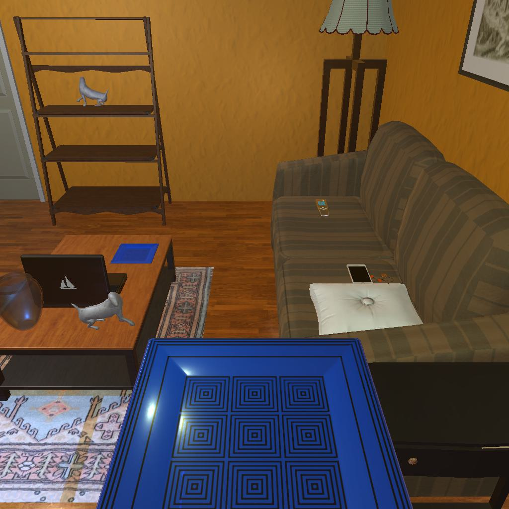

---------------------------------------------------------task: 3---------------------------------------------------------
--------------------------------------------------------------------------------------------------------------------------------------------------------------------
--------------------------------------------------------------------------------------------------------------------------------------------------------------------
Step:--------------------------------------------------------------------------2-------------------------------------------------------------------------------
----------------------------------------
VLM Prompt:
Image1:
Image2:
**Instruction**
1. Analyze the provided images to identify all visible household objects and compare the difference between images (e.h. whether the object is opened or not and taken on hand or not), focusing on those relevant to the task description "examine the plate with the floorlamp."
2. Use the analysis of images and the task hint "The agent must find an object of the desired type, locate and turn on a light source with the desired object in-hand." to answer the question: what is the most reasonable action in the choices for the task description "examine the plate with the floorlamp"?
3. Decide and write the answer using the template: The answer is: (i): , where i is the real number. If there is no desired object in images, search every place based on **Initial Observation** to find the object. And if no one is exactly correct, choose a similar answer.
**Initial Observation**
You are in the middle of a room. Looking quickly around you, you can see armchair (1), garbagecan (1), tvstand (1), shelf (1-5), sofa (1), coffeetable (1), sidetable (1-2), drawer (1)
**Answer Choices**
(1): go to armchair 1
(2): go to garbagecan 1
(3): go to tvstand 1
(4): go to shelf 1
(5): go to shelf 2
(6): go to sofa 1
(7): go to coffeetable 1
(8): go to sidetable 2
(9): go to drawer 1
(10): go to shelf 3
(11): go to shelf 4
(12): go to shelf 5
(13): put plate 2 in/on sidetable 1
(14): use floorlamp 1
(15): examine plate 2
(16): examine sidetable 1
**Answer**
Let's think step by step by following the instructions.
----------------------------------------
----------------------------------------
Original Response:
Firstly, we need to identify all visible household objects in the images provided and note the differences between the two images. In both images, we can see a sofa with a phone and a remote on it, a coffeetable with a laptop, a blue book, and a decorative bird, a sidetable with a plate and a lamp on it, a shelf with a decorative figure and two blue books, and a floorlamp behind the sofa. There are no significant differences between the two images concerning the objects' positions or states (e.g., opened/closed or taken/not taken).
Now, focusing on the task description "examine the plate with the floorlamp," we understand that the agent must find a plate and then locate and turn on a light source (the floorlamp) while holding the plate. Based on the initial observation, the plate is most likely located on sidetable 1 (as no other plates are visible in the images). The floorlamp is already identified behind the sofa.
Therefore, the most reasonable action would be to first take the plate from the sidetable and then turn on the floorlamp to examine the plate with the light source. The actions provided in the choices that correspond to these steps are "go to sidetable 1" to take the plate and "use floorlamp 1" to turn on the lamp. However, there is no direct action stating "take plate from sidetable 1," but "examine sidetable 1" could imply inspecting or interacting with the objects on the sidetable, which would be the closest action to taking the plate.
The answer is: (16): examine sidetable 1.
----------------------------------------
----------------------------------------
>>> Refine Original VLM Response and Get Pure Action: examine sidetable 1
----------------------------------------
-----------------------------------------------------------------
Running time: 15.197643280029297 seconds
Total Money: 0.69691
-----------------------------------------------------------------
-----------------------------------------------------------------
Text Observation:On the sidetable 1, you see a floorlamp 1, a pillow 1, a laptop 1, a vase 1, a statue 1, a plate 1, a statue 2, a cellphone 1, a remotecontrol 1, a keychain 1, and a newspaper 1.
-----------------------------------------------------------------
UNSUCCEED